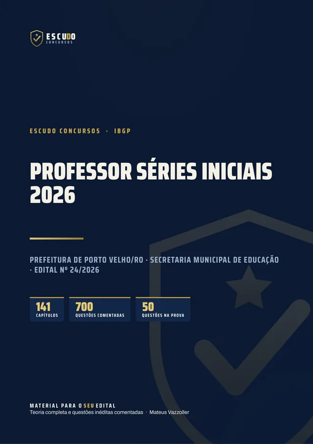
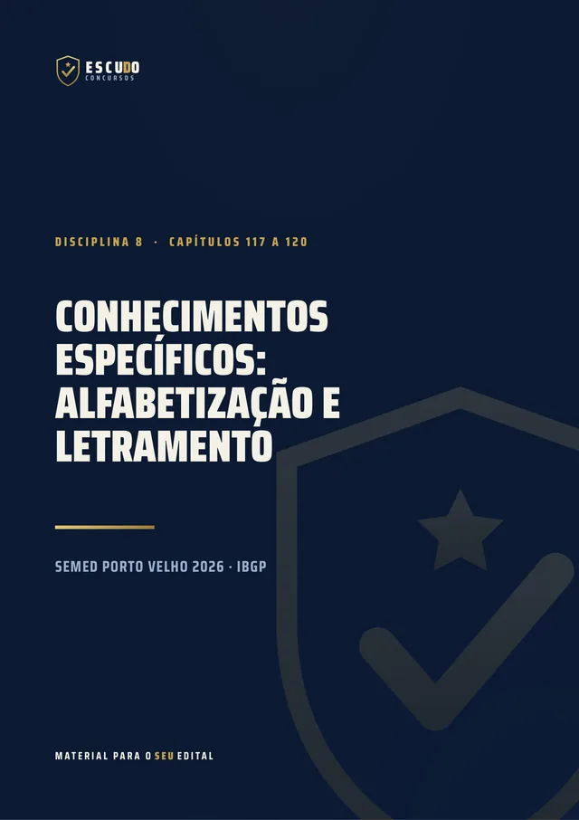
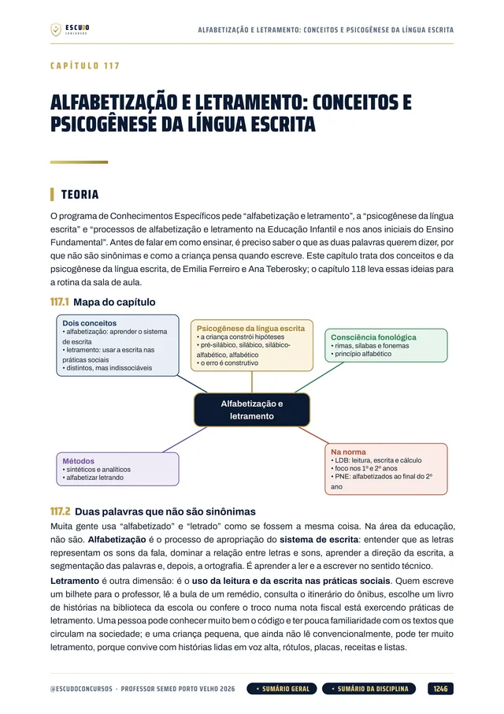
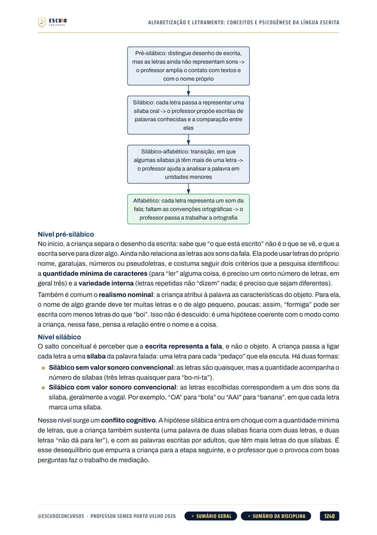
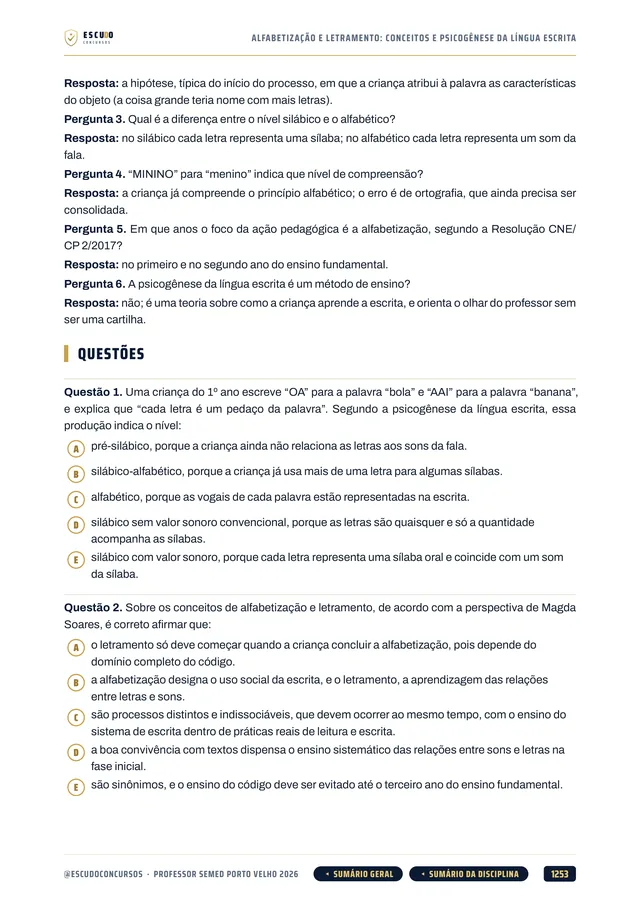
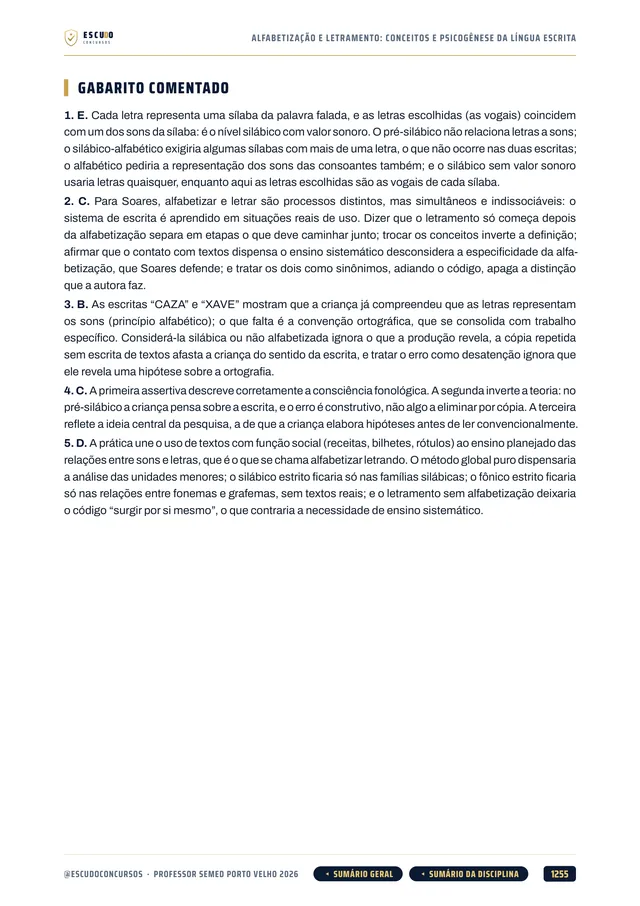

Simulado 1
No meio do caminho
Para medir onde você está e ajustar o estudo enquanto ainda dá tempo.
30 dias após a compra


700questões
comentadas
SEMED Porto Velho/RO 2026 · Curso em PDF
São 330 vagas para Professor Séries Iniciais em Porto Velho, 165 imediatas e 165 de cadastro de reserva. O seu material cobre o programa inteiro, da LDB ao Estatuto do Magistério de Porto Velho? Curso feito a partir do Edital nº 24/2026, item por item, com questões de A a E, como na prova, e gabarito comentado.
de R$ 47 por
R$37
com o cupom PROFESSOR37 até 11/11/2026. Pelo botão, o cupom já vai preenchido.
R$47
Curso completo, com acesso imediato.
O concurso
O Concurso Público da Educação do Município de Porto Velho/RO (Edital nº 24/2026, Secretaria Municipal de Educação) abriu 165 vagas imediatas para Professor Nível II, Séries Iniciais, e mais 165 de cadastro de reserva, com vencimento de R$ 3.847,97 e jornada de 30 horas semanais. O cargo exige licenciatura plena em Pedagogia. As inscrições vão de 13 de outubro a 11 de novembro de 2026, até as 16h de Rondônia, com taxa de R$ 130,00.
A prova do IBGP é em 6 de dezembro de 2026, domingo, às 9h15, com 3 horas de duração: 50 questões de 5 alternativas, de (A) a (E), todas com peso 2, sem prova discursiva. Depois vem a prova de títulos, só classificatória, com até 10 pontos.
Aprova quem fizer no mínimo 50 dos 100 pontos, sem mínimo por disciplina. Como toda questão vale 2 pontos, os 15 Conhecimentos Específicos e as 10 questões de Legislação Educação somam 50 pontos: metade da prova está nas leis da educação e na prática do professor.
| Disciplina | Questões | Pontos |
|---|---|---|
| Língua Portuguesa | 10 | 20 |
| Raciocínio Lógico | 10 | 20 |
| Conhecimentos Gerais e Atualidades | 5 | 10 |
| Legislação Educação | 10 | 20 |
| Conhecimentos Específicos | 15 | 30 |
| Todas as questões com peso 2. Aprovação com 50 pontos no total, sem mínimo por disciplina. Títulos: até 10 pontos a mais. | 50 | 100 |
O formato
Você estuda lendo, no seu ritmo, pela área de membros da Hotmart ou com os arquivos baixados. O curso foi feito a partir do Edital nº 24/2026, item por item, na ordem do conteúdo programático do Professor Séries Iniciais, com a legislação conferida no texto oficial vigente em 29/09/2026, a data de publicação do edital.
Páginas reais do PDF
Toque numa página para ver em tamanho maior.





O que você recebe
Curso em PDF organizado em módulos pelas disciplinas do edital, com 1.486 páginas no padrão visual ESCUDO, para ler no computador, no tablet, no celular ou no app da Hotmart. Não há videoaulas.
141 capítulos cobrindo as cinco disciplinas da prova: Língua Portuguesa (26 capítulos), Raciocínio Lógico (22), Conhecimentos Gerais e Atualidades (7), Legislação Educação (37) e Conhecimentos Específicos (48), mais um capítulo de abertura sobre a prova, os títulos e o plano de estudo.
700 questões inéditas com 5 alternativas, de (A) a (E), como na prova, todas com gabarito comentado: por que a correta está correta e onde está o erro de cada uma das outras.
Legislação Educação em 37 capítulos: direito à educação na Constituição Federal, LDB em 6 capítulos, ECA em 7, Estatuto da Pessoa com Deficiência, o novo PNE (Lei 15.388/2026), Piso (Lei 11.738/2008), Fundeb (Lei 14.113/2020), DCNs gerais, educação especial inclusiva e AEE, EJA, educação do campo, indígena e quilombola, educação integral e educação digital, e as duas normas de Porto Velho: o Estatuto do Magistério Público Municipal (Lei 643/1986), em 4 capítulos, e o Plano Municipal de Educação (Lei 2.228/2015), em 2.
Conhecimentos Específicos em 48 capítulos, pelo programa do Professor: BNCC, DCNs da Educação Infantil e do Ensino Fundamental de 9 anos, Currículo Referência, desenvolvimento infantil, Piaget, Vygotsky e Wallon, tendências pedagógicas e Paulo Freire, didática e planejamento, alfabetização e letramento com a psicogênese da língua escrita, literatura infantil, Educação Infantil (interações e brincadeiras, educar e cuidar, rotina), TEA, TDAH e dislexia, relações étnico-raciais, direitos humanos, avaliação, PPP, gestão democrática, tecnologias, formação docente, ética e primeiros socorros e segurança na escola.
Conhecimentos Gerais e Atualidades em 7 capítulos: história e geografia de Porto Velho e de Rondônia, símbolos nacionais, estaduais e municipais, cidadania, atualidades de 2021 a 2026 e atualidades de Porto Velho e da educação municipal.
Casos práticos na escola municipal de Porto Velho ao longo da teoria.
Teoria com recursos para memorizar: mapa de cada capítulo, esquemas, quadros de "pegadinha" e "não confunda", tabela de números nas leis de Porto Velho, questão comentada passo a passo, revisão relâmpago e teste de memória no fim de cada capítulo.
Navegação clicável: do sumário você vai direto ao capítulo, e volta pelo botão do rodapé.
2 simulados inéditos no formato exato da prova (50 questões de A a E, na ordem e na divisão do edital), cada um com caderno de comentários. O Simulado 2 é liberado na semana anterior à prova, para o seu último teste.
Área de membros
| Módulo | Conteúdo | Liberação |
|---|---|---|
| M0 Comece aqui | Apresentação + capítulo 001 (como é a prova, os títulos e como usar o curso). Bônus: PDF completo para baixar e imprimir | Na compra; o PDF completo no 8º dia |
| M1 Língua Portuguesa | Capítulos 002 a 027 | Na compra |
| M2 Raciocínio Lógico | Capítulos 028 a 049 | Na compra |
| M3 Conhecimentos Gerais e Atualidades | Capítulos 050 a 056 | Na compra |
| M4 Legislação Educação | Capítulos 057 a 093 | Na compra |
| M5 Específicos: currículo e diretrizes | Capítulos 094 a 103 | Na compra |
| M6 Específicos: desenvolvimento e aprendizagem | Capítulos 104 a 109 | Na compra |
| M7 Específicos: didática e trabalho pedagógico | Capítulos 110 a 116 | Na compra |
| M8 Específicos: alfabetização e letramento | Capítulos 117 a 120 | Na compra |
| M9 Específicos: Educação Infantil | Capítulos 121 a 125 | Na compra |
| M10 Específicos: inclusão e diversidade | Capítulos 126 a 129 | Na compra |
| M11 Específicos: avaliação, PPP e gestão | Capítulos 130 a 133 | Na compra |
| M12 Específicos: profissão docente, tecnologias e segurança | Capítulos 134 a 141 | Na compra |
| M13 Simulado 1 | 50 questões no formato da prova, caderno de comentários | 30 dias após a compra |
| M14 Simulado 2 | 50 questões no formato da prova, caderno de comentários | 29/11/2026 (7 dias antes da prova) |
Treino no formato da prova
Cada simulado tem 50 questões de A a E, no formato exato da prova, com caderno de comentários.
Simulado 1
Para medir onde você está e ajustar o estudo enquanto ainda dá tempo.
30 dias após a compra
Simulado 2
Liberado na semana anterior à prova de 06/12/2026.
29/11/2026
Para quem é
Para quem vai prestar Professor Nível II, Séries Iniciais, da Secretaria Municipal de Educação de Porto Velho em 06/12/2026 e quer estudar pelo programa do edital, com a Legislação Educação e os Conhecimentos Específicos, que somam 50 dos 100 pontos, cobertos por inteiro.
Você tem 7 dias de garantia pela Hotmart. Se não for o que você esperava, pede o reembolso pela própria Hotmart, dentro do prazo.
Dúvidas
Não. É um curso 100% em PDF: teoria, questões comentadas e simulados para ler e resolver.
O acesso é imediato depois da confirmação do pagamento, pela área de membros da Hotmart (web ou app). O PDF completo para baixar e imprimir é liberado no 8º dia.
O Simulado 1 é liberado 30 dias após a compra. O Simulado 2 é liberado em 29/11/2026, uma semana antes da prova.
Não como curso completo. Português, Raciocínio Lógico e Conhecimentos Gerais são comuns ao edital, e a Legislação Educação é a mesma dos Especialistas, mas os 15 Conhecimentos Específicos seguem só o programa do Professor Séries Iniciais. O Agente de Secretaria Escolar tem outra Legislação e outros específicos.
Prova objetiva no domingo pela manhã, com 3 horas: 50 questões de múltipla escolha com cinco alternativas, de (A) a (E), e uma só correta, todas valendo 2 pontos. Não há prova discursiva nem prova prática. Depois vem a prova de títulos, só classificatória, com até 10 pontos. As questões do curso seguem esse formato.
Doutorado vale 5 pontos, mestrado 3 e especialização de 360 horas 2, um título de cada, até 10 pontos, somados à nota da objetiva. Ninguém é eliminado por não ter título. O capítulo 001 explica a convocação e o envio.
Não. As 700 questões de treino e as dos simulados são inéditas, escritas no formato do edital a partir do conteúdo programático do Professor Séries Iniciais.
Você tem 7 dias de garantia pela Hotmart. Se não for o que você esperava, pede o reembolso.
SEMED Porto Velho/RO 2026 · Professor Séries Iniciais
de R$ 47 por
R$37
com o cupom PROFESSOR37 até 11/11/2026.
R$47
Curso completo, com acesso imediato.
Material para o SEU edital. ESCUDO Concursos.